Commissioned Officers
Commissioned officers hold leadership roles within the Indian Air Force, overseeing operational and administrative aspects of air units.
Explore the ranks and responsibilities in the Indian Air Force, from the highest office of the Marshal of the IAF to the ranks of Non-Commissioned Officers.
| Category | Rank | Insignia | Description |
|---|---|---|---|
| Commissioned Officers | Marshal of the IAF | 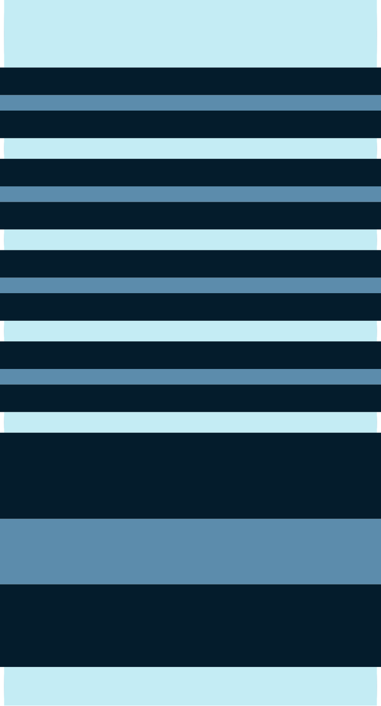 | Highest rank in the Indian Air Force, typically held by the senior-most officer. |
| Air Chief Marshal | 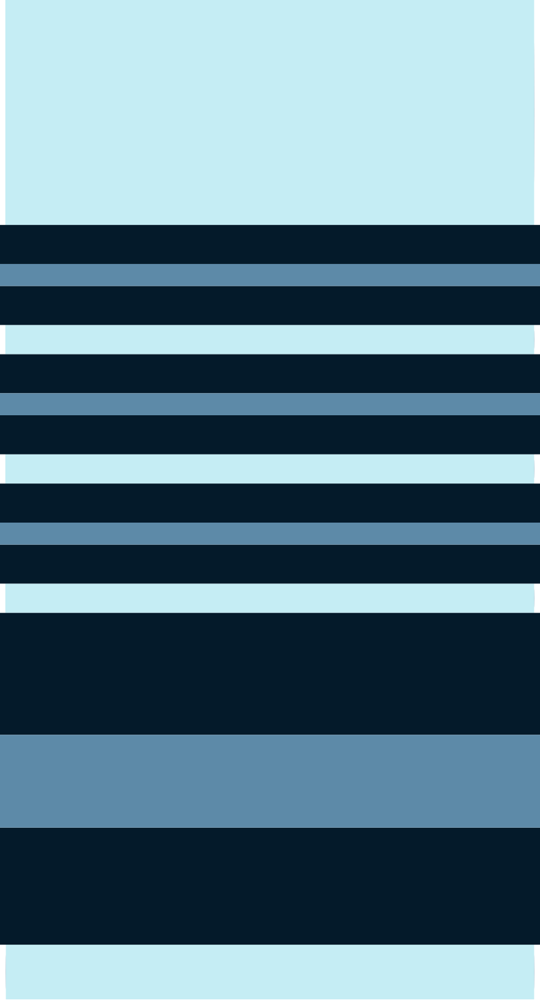 | Commander-in-Chief of the Indian Air Force. | |
| Air Marshal | 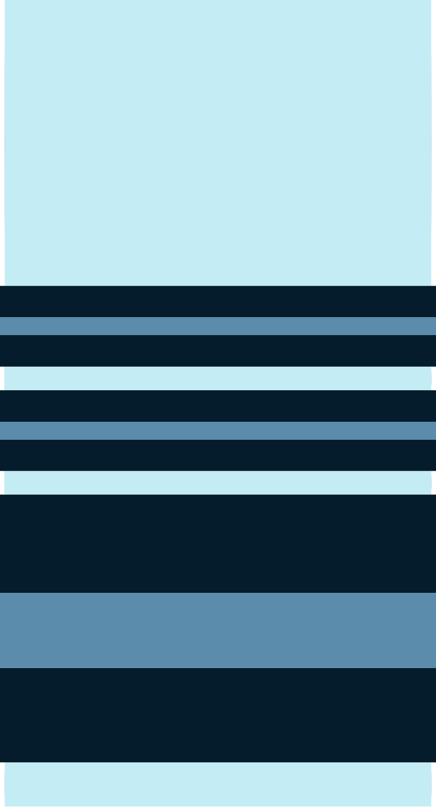 | Senior officer rank, often responsible for large operational areas. | |
| Air Vice Marshal | 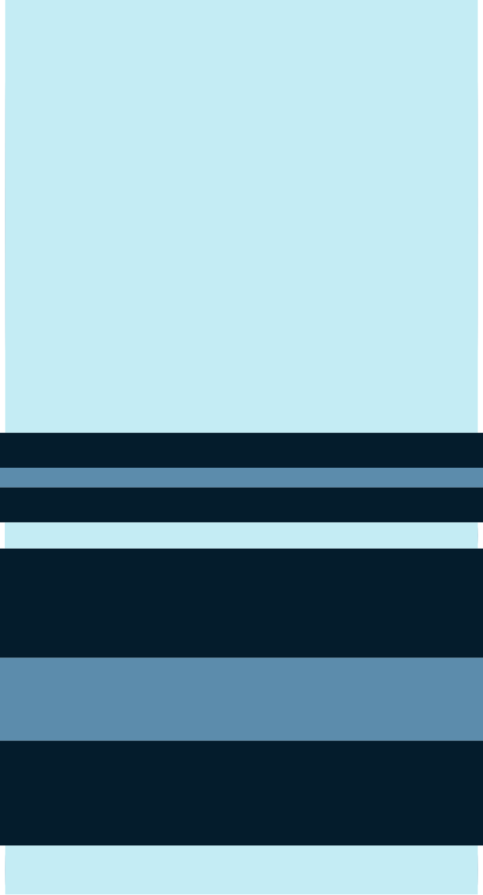 | Typically commands a region or division. | |
| Air Commodore | 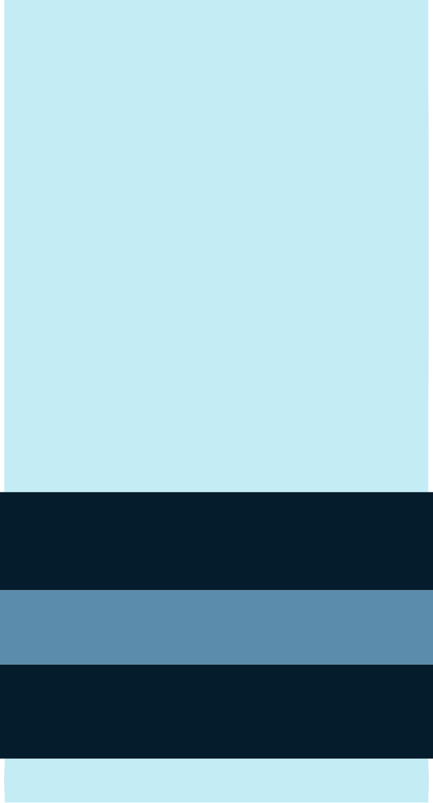 | Commands operational wings and directs air operations. | |
| Group Captain | 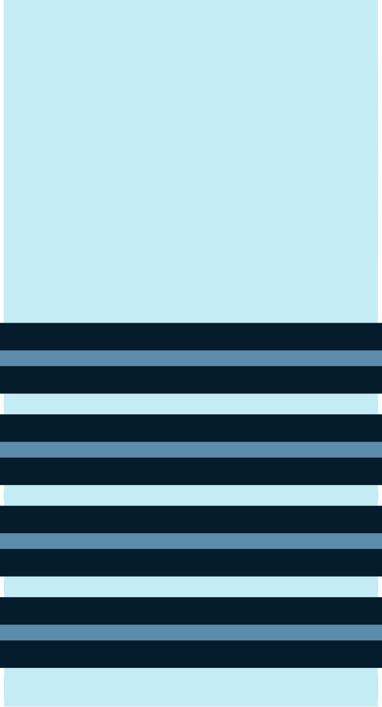 | Commands air squadrons and is responsible for overall operations in their area. | |
| Wing Commander | 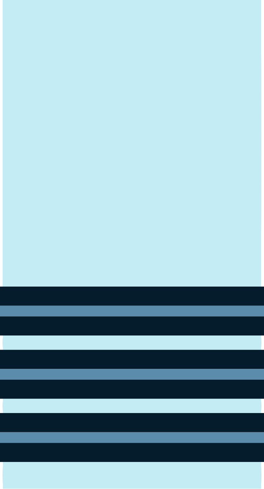 | In charge of a wing consisting of several squadrons. | |
| Squadron Leader | 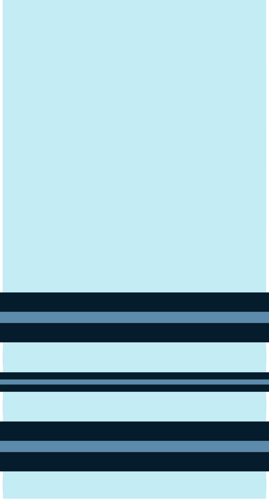 | Leads and manages a squadron. | |
| Flight Lieutenant | 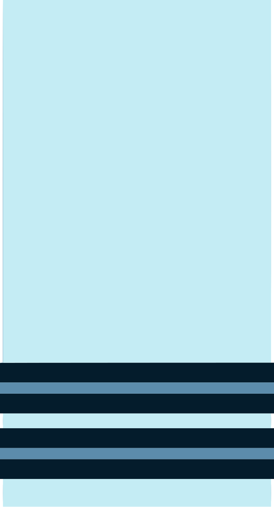 | Manages operational and technical aspects of a flight. | |
| Flying Officer | 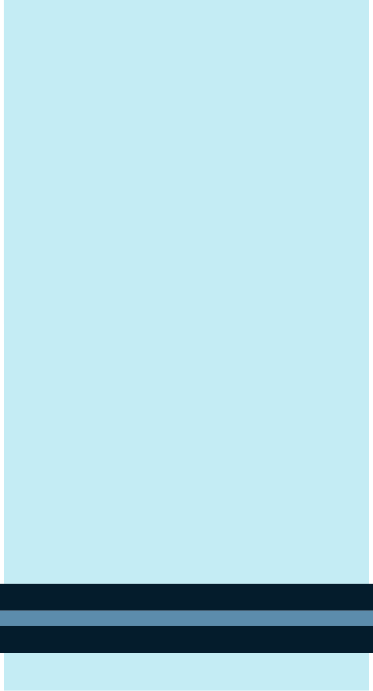 | First rank after commissioning, involved in flight operations and training. | |
| Junior Commissioned Officers | Master Warrant Officer | 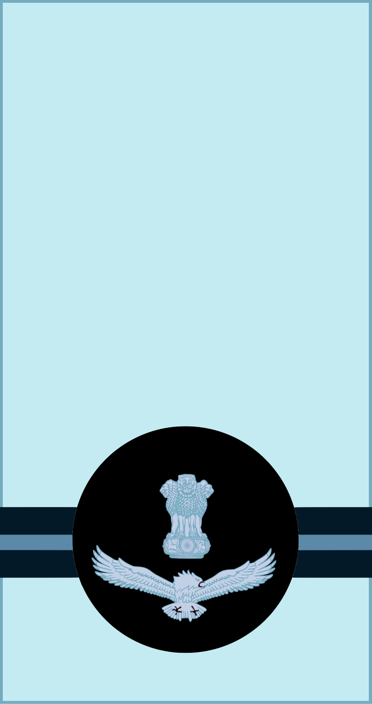 | Highest rank among JCOs, responsible for leading operations and technical roles. |
| Warrant Officer | 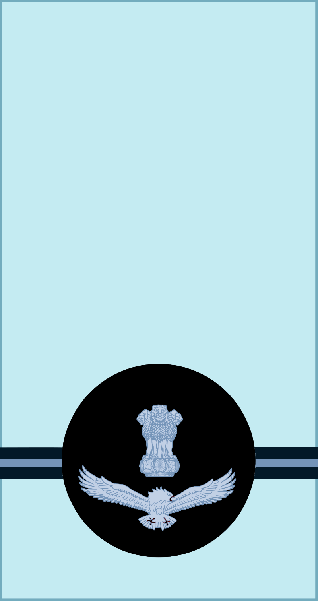 | Handles administrative and operational management. | |
| Junior Warrant Officer | 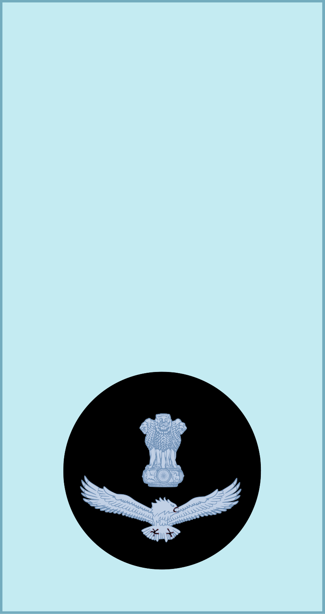 | Supports senior officers and ensures coordination between ranks. | |
| Non-Commissioned Officers | Sergeant | 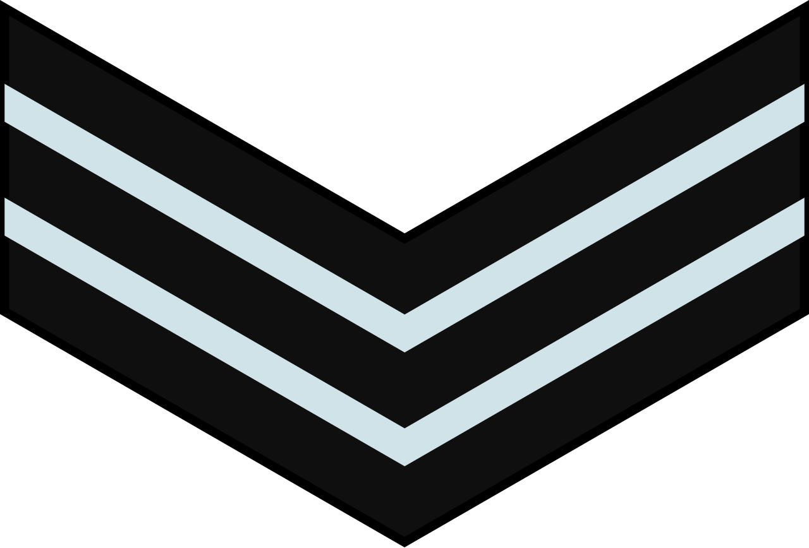 | Oversees the discipline and operational readiness of lower ranks. |
| Corporal | Supervises junior airmen and enforces regulations. | ||
| Leading Aircraftman (LAC) | 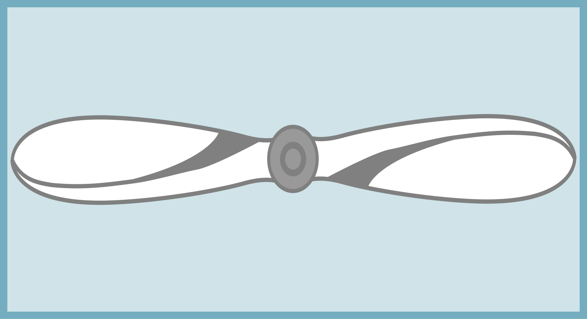 | Performs operational tasks and ensures smooth execution of duties. | |
| Aircraftman (AC) |  |
Entry-level rank for airmen-in-training. |
Commissioned officers hold leadership roles within the Indian Air Force, overseeing operational and administrative aspects of air units.
Junior Commissioned Officers (JCOs) are vital in ensuring operational efficiency and discipline at lower ranks.
Non-Commissioned Officers are responsible for ensuring that operations run smoothly at the ground level.